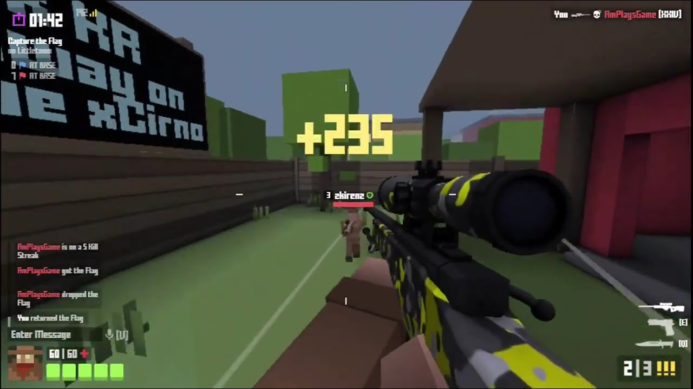
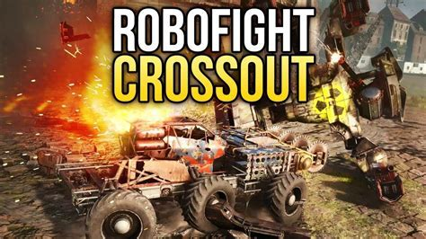
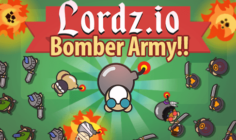
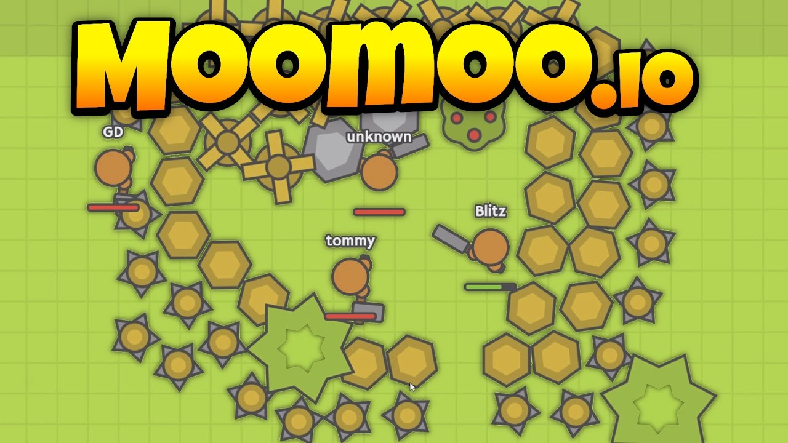
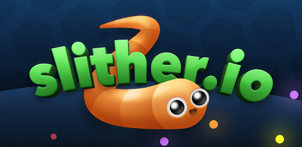
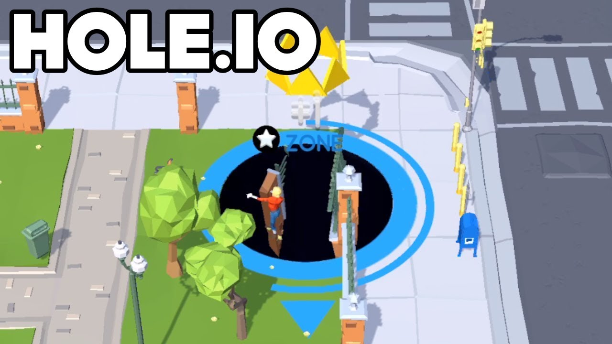

Note this games are only for pc, laptop, and some may not support android or ios devices.
Krunker.io is a popular 3D browser FPS created by Yendis Entertainment. The game entered open beta on May 20, 2018, and was fully released on January 29, 2019.
Shoot your way through 15 rotation maps to earn rewards. Master the highly skill-based movement system unique to Krunker. If dropping nukes and quick-scoping people in lobbies isn't your thing, Krunker also offers thousands of custom games to choose from. Infected, Parkour, Free for All, Capture the Flag and much much more. With Krunker's robust modding and mapping tools - there are no limits to what you can create and experience.
Robofight (working title Bot Arena) is a multiplayer online game written in Java6 and JavaFX 1.2. It features a rich client, fight-based multiplayer games, a botshop, chats, a coin system to buy better bots and loads of statistics. The security platform built for IT managers. Try it for free
Explore beautiful and futuristic graphics with highly detailed weapons and skins. A lot of weapons available in the game, and the ability to register for saving the achievements completed. The game will provide 7 types of weapons but you are limited to the automatic machine gun, the other powerful weapons like Sniper rifle, Laser Gun, Shotgun SV9, CQ rifle, automatic machine gun AR105, Automatic gun SR35, and Enz will be available only if you register in the game. Get your friends online to experience the best thrilling moments with epic shot-out that is similar to the classic Counter-Strike game
Lordz.io is a multiplayer survival game based in a medieval world. Starting as a lonesome lord, you must build a small empire by collecting gold and building your base. Create various military units and prepare your defenses. Be careful out there, there are other lords to contend with!
There are several buildings that can be used to expand your power. Build mage towers and introduce your foes to the power of magic with mages. Expand your little kingdom with houses for soldiers, knights, archers, and more powerful units. A key part of the game is earning gold. You can do this by collecting coins manually. But if you want to become a wealthy lord, you build gold mines on deposits. Then you can buy all the flashy things, like fire-breathing dragons. You can directly attack other lords if you’re feeling brave. It’s also highly lucrative to destroy and loot their buildings when they’re away on business. If you’re sneaky, you can take down enemy gold mines for significant rewards. Then use the currency to splash out on a few dragons.
MooMoo.io is a challenging .io game about gathering resources and building a village.
Hit trees and rocks to collect wood and stones. You can use those resources to build walls and windmills. The walls provide protection to your marked resources and windmills. The windmills can give you points over time. You can also hit fruit bushes to get food that you can use to restore HP. Just like in most .io games, the goal is to level up by gathering resources.
Slither.io is a multiplayer online video game available for iOS, Android, and web browsers, developed by Steve Howse. Players control an avatar resembling a worm, which consumes multicolored pellets, both from other players and ones that naturally spawn on the map in the game, to grow in size.
It's cool if you don't because these snakes are no threat to you. The players controlling the snakes, though... They'll try to get you. Enjoy this twist on the classic snake genre with Slither.io! Like the classic game Snake that was available on cell phones and computers for decades, you grow by eating small pellets.
Hole.io is a 2018 arcade physics puzzle game with battle royale mechanics created by French studio Voodoo for Android and iOS.
Players control a black hole moving around an urban area. By consuming various objects, holes will increase in size, allowing players to consume larger objects as well as smaller players. Critics praised the game when it debuted, and it took the top spot in the free apps section on the App Store and on Google Play. Some critics however, characterized the game as a clone of the 2018 independent game Donut County. It has also been criticized for being promoted as a multiplayer game when the other "players" are likely computer controlled NPC's